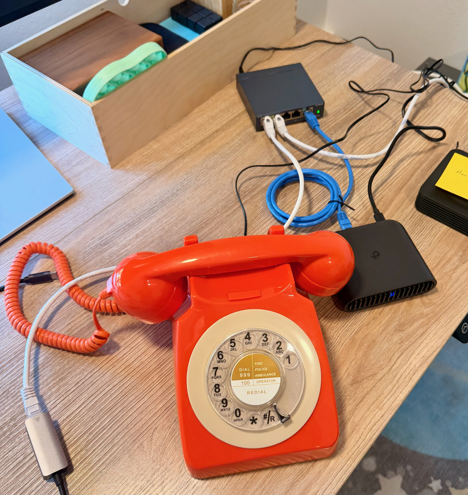
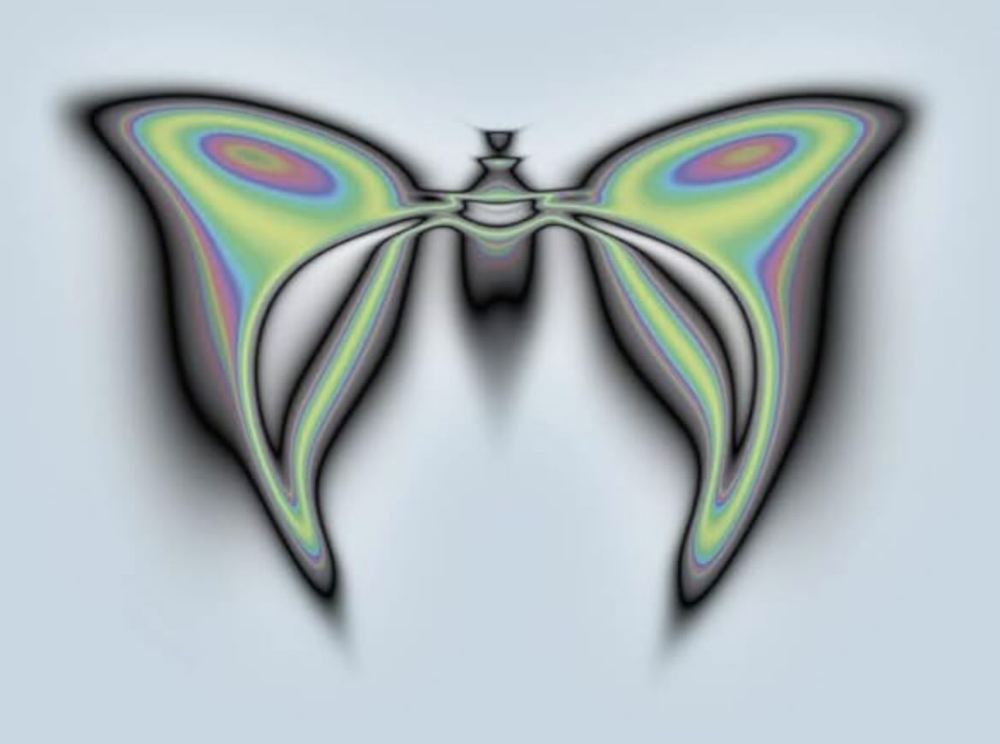

![Comic strip panels 1-3: A boy asks his dad how cement dries in the rain. Dad suggests asking the Answering Machine. The boy picks up an orange rotary phone, and a butterfly AI begins searching for books, weather, and construction schedules. panels 4-6: Dad receives a text suggesting a library book and nearby construction site. The boy presses his hands into wet cement. Walking home at sunset past Sutro Tower, the boy asks why hard hats don't look like bike helmets. Dad says let's ask the Answering Machine when we get home.](comic.jpg)
The Opportunity
A child's curiosity is the most powerful learning engine that exists. It's self-directed, relentless, and deeply personal. A four-year-old doesn't need a curriculum — they already have one. It reveals itself every time they ask a question nobody expected.
"Dad, how does cement dry when it's raining?"
That question contains the seed of chemistry, material science, civil engineering, and urban planning. Not as school subjects, but as a single thread of wonder. If you follow it, it branches. If you let it lead, it takes you somewhere nobody could have predicted. Kenneth Stanley and Joel Lehman call this the power of non-objective search — the insight that the most interesting discoveries happen not when you're optimizing toward a predefined goal, but when you're following what's interesting and seeing where it leads.
"You can go treasure hunting by following your instinct for the interesting, not because you know where you're going, but because you feel the potential in where you are right now."
— Kenneth Stanley & Joel Lehman, Why Greatness Cannot Be Planned
Meanwhile, the internet is the greatest library ever assembled. Somewhere in it is a children's book about how buildings are built. A city website listing active construction permits. A weather forecast showing sun on Thursday. A map that puts the library and the construction site two blocks apart.
The knowledge is there. The curiosity is there. What's missing is the bridge.
The Problem
The devices we have can't be that bridge.
A smartphone is a general-purpose computer, and that flexibility is its curse. A child asking about cement is two taps away from YouTube autoplay. The same screen that could show them a library catalog is competing with every notification, game, and algorithm designed to capture attention. Companies like Clearspace are doing important work adding intentional friction to make smartphones less compulsive — and they're right that the problem is environmental, not willpower. But the underlying tension is architectural: a device that does everything will always compete with itself.
There's a simpler version of this idea that gets overlooked: special-purpose devices are often better at their job than an app on a general-purpose computer, even when they're functionally identical. A Kindle is just a screen that displays text — your phone does that too. But people read more on Kindles. The constraint is the feature. When a device only does one thing, you only do one thing when you pick it up.
Even with the right device, there's a human bottleneck. A child's curiosities shift fast — cement one day, whales the next, volcanoes by Friday. Curating books, activities, and outings to match those rapidly changing interests is a superhuman task. No parent, no matter how engaged, can keep up with a four-year-old's rate of wonder while also making dinner and doing laundry. The knowledge exists to feed every question, but assembling it in real time, for this specific child, on this specific day, is work that didn't used to be possible.
And then there's the harder problem. Kids don't just ask about cement. They ask about bodies, about death, about why their friend said something cruel, about things that embarrass them. When kids don't feel safe asking those questions out loud, they find answers on their own — and the internet is a terrible place to learn about puberty or grief or identity without any context or care. The problem isn't that kids are curious about hard things. It's that we haven't built them a safe place to be curious.
The Solution
A good solution will
- Bias toward engagement with the physical world: books, outings, conversations, not more screen time
- Meet the child where they are: no reading, no typing, no prerequisite skills, no background knowledge required
- Follow not lead: stick tight to a topic until the child changes the topic
- Be safe by default, private by design
- Strengthen the family rather than replace any part of it
A good solution will not
- Be parasocial: no "AI best friend," no synthetic relationship, no emotional dependency
- Drive engagement: no retention loops, no feeds
- Require the parent to be omniscient: the system helps because no one person can keep up with a child's rate of curiosity
The Phone
The Answering Machine hardware is a retro orange tabletop rotary phone — a Western Electric 500 — sitting on the kitchen table. A kid picks up the handset and without dialing, they're talking to the Answering Machine. They ask a question, and get a spoken answer. No screen. No keyboard. No app. The phone is the whole interface.
This means a child doesn't need to be able to read or type to access the entire universe of human knowledge. They just need to be able to talk, which they've been doing since they were two. The form factor matters: this isn't a gadget you charge and lose. It's a piece of furniture. It belongs in the home the way a bookshelf does. It's always there, never demanding attention, waiting for the moment a question arrives.
The constraint is the point. No screen means no distraction. No visual interface means no rabbit hole. When you hang up the phone, the experience is over. What's left is the question and whatever it sparked — a conversation with a parent, a new thought, a sense that the world is more interesting than it was five minutes ago.
The Butterfly
Behind the phone is a system of AI agents.
We call them collectively "the butterfly" — after the image that emerged from Picbreeder, an online experiment by Kenneth Stanley where users collaboratively evolved images with no objective in mind. The most remarkable images, including a butterfly, were never anyone's goal. They emerged because people followed what was interesting, one step at a time. The butterfly became the emblem of non-objective search: proof that you can find something beautiful without knowing what you're looking for.
The butterfly listens to what a child is curious about and does something no search engine does: it connects that curiosity to the real world. It searches library catalogs for relevant books. It checks city construction schedules and community calendars. It reads weather forecasts. It finds tide tables and park events and museum free-days. Then the butterfly quietly assembles these into a recommendation for the parent: there's a book on hold for you at the library, and there's a sidewalk pour two blocks away on Thursday.
The parent thinks they're running errands. The kid thinks they're going on a walk. Nobody planned the handprints in wet cement. But the butterfly arranged the stepping stones, and the family walked across them.
"You can go treasure hunting by following your instinct for the interesting, not because you know where you're going, but because you feel the potential in where you are right now."
"If you're wondering how to escape the myth of the objective, just do things because they're interesting. Not everything needs to be guided by rigid objectives. If you have a strong feeling, go with it."
— Kenneth Stanley & Joel Lehman, Why Greatness Cannot Be Planned
This is the pedagogy of The Answering Machine. There is no curriculum. There are no learning objectives. There is no assessment. There is a child, a question, and an AI that takes that question seriously enough to reshape a Thursday afternoon around it. Revealed curiosity as real-time curriculum.
67 Mode
For older kids, The Answering Machine has a private mode. Dialing '67' before the call connects — a nod to both *67 caller ID blocking, and the inscrutable meme — routes the conversation to a separate agent with a different personality: more "cool older brother," less "fun uncle." The conversation is still retained and safety guardrails still apply. But no summary is generated for parents. No recommendations surface. The child gets a genuinely private space to ask questions they might not want to discuss with their family.
This is a feature that parents opt into. It's designed for the age when kids start having questions they're not comfortable asking out loud — about their bodies, their identity, their social world. In the past, these questions were answered through play yard lore. Today, they're mostly answered via unrestricted web browser access. The thesis is simple: it's better that a child learns about hard topics through honest, age-appropriate dialogue with an AI that's been designed to care for them.
And the privacy isn't a policy toggle. It's architectural. The standard voice agent and the 67 agent are separate systems with separate phone numbers, separate personalities, and separate data pipelines. 67 Mode conversations never enter the parent-facing flow. The wall is structural, not a setting someone can accidentally undo.
Parents Are Downstream
The Answering Machine serves the child's curiosity first and helps the parent support it second.
Parents don't configure the child's experience. They don't listen in real-time. They don't approve questions. They receive, asynchronously, a summary of what their child has been curious about and a set of recommendations for how to feed that curiosity in the real world: a library book, a walk, a weekend trip, a conversation starter at dinner.
This is a deliberate inversion. Most "kids' tech" is built for the parent as the primary user and the child as the subject. The Answering Machine is built for the child as the primary user and the parent as a collaborator. The AI's job is to make the parent look brilliant without the parent having to do the work of being omniscient. You don't need to know why cement cures in the rain. You just need to pick up the phone when your kid asks.
Machines of Loving Grace
In 1967, Richard Brautigan imagined a world where technology and nature existed in harmony. In his vision, machines hadn't replaced anything, but they'd freed people to return to what mattered. It was naive, deliberately so. He wrote it at Caltech, surrounded by engineers, and gave it away for free.
The Answering Machine is a small bet on the same idea. Not that technology will save us, but that it can occasionally get out of the way enough to let something good happen. A child asks a question. An AI takes it seriously. A family has an afternoon they didn't plan. A new question forms on the walk home.
The butterfly doesn't lead. It arranges the stepping stones and then disappears into the clouds.
of an orange phone on the kitchen table
where a child picks up the handset
wonders curiously,
and is all watched over
by machines of loving grace.